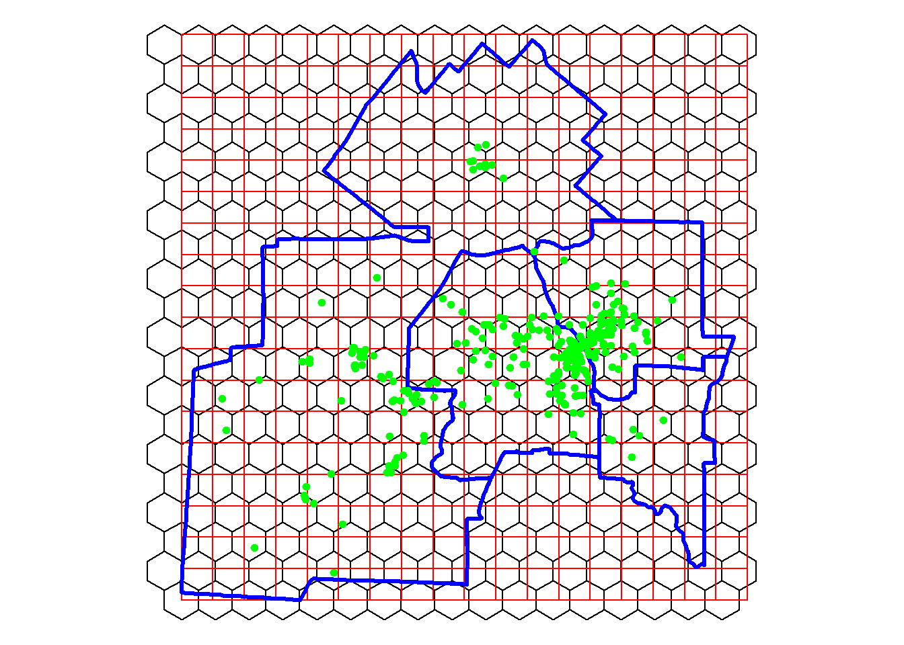

3.3 Forme d’un semis de points
Étudier la forme d’un semis de points, c’est vouloir décrire l’arrangement spatial et l’espacement des points dans une région donnée. Autrement dit, l’objectif est de répondre à la question suivante : comment se répartissent les points dans une région donnée? Nous distinguons habituellement trois types de distribution spatiale d’un semis de points figure 3.10 :
- Distribution dispersée quand les points du semis sont régulièrement espacés.
- Distribution aléatoire quand la distribution des points n’est nullement guidée par des considérations géographiques. Autrement dit, chaque point du semis a la même probabilité d’être situé dans n’importe quelle partie de la zone d’étude.
- Distribution concentrée quand il existe des regroupements des points dans une ou plusieurs parties de la région d’étude. Par exemple, les musées et les théâtres sont habituellement concentrés dans les parties centrales des métropoles.
Figure 3.10: Trois types de distribution spatiale d’un semis de points
Il existe deux grandes familles pour décrire la forme d’un semis de points :
3.3.1 Méthode du plus proche voisin
Le principe de base de cette méthode est fort simple et se décompose en quatre étapes :
Mesurer, pour chaque point du semis, la distance le séparant du point le plus proche, puis calculer la distance moyenne du point le plus proche (équation (3.20)).
Calculer la moyenne attendue du point le plus proche pour une dispersion aléatoire (équation (3.22)).
Calculer l’indice du plus proche voisin, soit le ratio entre la distance observée et la distance aléatoire (équation (3.21)). L’indice R s’interprète alors comme suit :
- Si R est égal à 1, la dispersion du semis de points est aléatoire.
- Si R est inférieur à 1, la distribution du semis de points tend vers la concentration (avec une concentration absolue quand R = 0; tous les points ont les mêmes coordonnées géographiques).
- Si R est supérieur à 1, la distribution du semis de points tend vers la dispersion.
Calculer les valeurs de Z et de p pour déterminer si la valeur de R obtenue est significative (équation (3.23)).
\[\begin{equation} R_{o}= \frac{\sum_{i=1}^n d_i}{n} \tag{3.20} \end{equation}\]
\[\begin{equation} R_{a}= \frac{1}{2 \sqrt{(n/S)}} \tag{3.21} \end{equation}\]
\[\begin{equation} R = \frac{R_{o}}{R_{a}} \tag{3.22} \end{equation}\]
\[\begin{equation} Z = \frac{R_o-R_a}{SE} \text{, } SE = \frac{0.26136}{\sqrt{(n^2/S)}} \text{ avec :} \tag{3.23} \end{equation}\]
- \(n\), nombre de points.
- \(d_i\), distance séparant le point i de son voisin le plus proche.
- \(S\), Superficie de l’espace d’étude.
Le code ci-dessous permet de mettre en œuvre la méthode du plus proche voisin pour les méfaits pour les quatre années.
library(spatstat)
library(ggplot2)
## Indice du plus proche voisin : R observé (équation 3.20)
# le paramètre k indique le nombre de plus proches voisins
Robs2019 <- mean(nndist(st_coordinates(M2019),k=1))
Robs2020 <- mean(nndist(st_coordinates(M2020),k=1))
Robs2021 <- mean(nndist(st_coordinates(M2021),k=1))
Robs2022 <- mean(nndist(st_coordinates(M2022),k=1))
## Indice du plus proche voisin : R attendu (distribution aléatoire) (équation 3.21)
# Attention, il faut spéficier S, la superficie de l'espace d'étude
Arrondissements <- st_read(dsn = "data/chap03/Arrondissements.shp", quiet=TRUE)
Arrondissements <- st_transform(Arrondissements, crs = 3798)
S <- as.numeric(st_area(st_union(Arrondissements)))
# Nombre de points par année
N2019 <- nrow(M2019)
N2020 <- nrow(M2020)
N2021 <- nrow(M2021)
N2022 <- nrow(M2022)
# Calcul de Ra
Ra2019 <- 1 / (2 * sqrt(N2019 / S))
Ra2020 <- 1 / (2 * sqrt(N2020 / S))
Ra2021 <- 1 / (2 * sqrt(N2021 / S))
Ra2022 <- 1 / (2 * sqrt(N2022 / S))
## Calculons le R
# Création d'un DataFrame
IndicePPV <- data.frame(id = c("2019", "2020", "2021", "2022"),
points = c(N2019, N2020, N2021, N2022),
Superficie = c(S, S, S, S),
Robs = c(Robs2019, Robs2020, Robs2021, Robs2022),
Rattendu = c(Ra2019, Ra2020, Ra2021, Ra2022))
# Calcul du R (équation 3.22)
IndicePPV$R <- IndicePPV$Robs / IndicePPV$Rattendu
# Calcul du Z (équation 3.23)
IndicePPV$SE <- 0.26136 / sqrt(IndicePPV$points^2 / IndicePPV$Superficie)
IndicePPV$Z <- (IndicePPV$Robs - IndicePPV$Rattendu) / IndicePPV$SE
IndicePPV$P <- round(2*pnorm(q=abs(IndicePPV$Z), lower.tail=FALSE),3)
print(IndicePPV)## id points Superficie Robs Rattendu R SE Z P
## 1 2019 251 366358191 251.5498 604.0684 0.4164260 19.93051 -17.68739 0
## 2 2020 383 366358191 183.9866 489.0166 0.3762380 13.06151 -23.35335 0
## 3 2021 344 366358191 227.1881 515.9929 0.4402931 14.54232 -19.85961 0
## 4 2022 220 366358191 251.3347 645.2256 0.3895299 22.73890 -17.32234 0Interprétation des résultats
Analysons les différentes colonnes du tableau 3.3 :
- points (n) : il y a respectivement 251, 383, 344 et 220 méfaits pour les années 2019 à 2022.
- R observé : en moyenne, un méfait est distant de 252, 184, 227 et 251 mètres du méfait le plus proche pour les quatre années.
- R attendu : pour une distribution aléatoire, un méfait devrait être distant du méfait le plus proche de 604, 489, 516, et 645 mètres.
- Indice du plus proche voisin : toutes les valeurs sont inférieures à 1, indiquant des distributions spatiales concentrées. La concentration est la plus forte pour l’année 2020 (R = 0,376).
- valeur de p : toutes les valeurs sont égales à 0, signalant que les résultats sont significatifs.
| Année | points (n) | R observé | R attendu | Indice plus proche voisin | Erreur standard | Z | p |
|---|---|---|---|---|---|---|---|
| 2019 | 251 | 252 | 604 | 0,416 | 19,931 | -17,687 | 0 |
| 2020 | 383 | 184 | 489 | 0,376 | 13,062 | -23,353 | 0 |
| 2021 | 344 | 227 | 516 | 0,440 | 14,542 | -19,860 | 0 |
| 2022 | 220 | 251 | 645 | 0,390 | 22,739 | -17,322 | 0 |
Notez qu’il est possible aussi de construire un graphique pour le R observé avec plusieurs voisins, tel que réalisé avec la syntaxe ci-dessous avec k = 1 à 50 (figure 3.11).
# k = 1 à 50
Robs2019N1_50 <- apply(nndist(st_coordinates(M2019), k=1:50), 2, FUN=mean)
Robs2020N1_50 <- apply(nndist(st_coordinates(M2020), k=1:50), 2, FUN=mean)
Robs2021N1_50 <- apply(nndist(st_coordinates(M2021), k=1:50), 2, FUN=mean)
Robs2022N1_50 <- apply(nndist(st_coordinates(M2022), k=1:50), 2, FUN=mean)
# Enregistrement dans des dataFrames
Robs2019N1_50 <- data.frame(An="2019", Voisins=1:length(Robs2019N1_50), Robs=Robs2019N1_50)
Robs2020N1_50 <- data.frame(An="2020", Voisins=1:length(Robs2020N1_50), Robs=Robs2020N1_50)
Robs2021N1_50 <- data.frame(An="2021", Voisins=1:length(Robs2021N1_50), Robs=Robs2021N1_50)
Robs2022N1_50 <- data.frame(An="2022", Voisins=1:length(Robs2022N1_50), Robs=Robs2022N1_50)
# Combinaison des dataFrames en un seul
RobsN1_50 <- rbind(Robs2019N1_50, Robs2020N1_50, Robs2021N1_50, Robs2022N1_50)
# Création du graphique
ggplot(RobsN1_50)+
geom_point(aes(x = Voisins, y = Robs, color = An))+
geom_line(aes(x = Voisins, y = Robs, color = An))+
labs(x = "Nombre de voisins",
y = "Robs - Distance en mètres",
color = "Année")Figure 3.11: Distance au plus proche voisin de 1 à 50
3.3.2 Méthode des quadrats
3.3.2.1 Principe de base
Le principe de base de la méthode des quadrats peut être décomposé en trois étapes :
- Superposer à la région d’étude comprenant le semis de points un ensemble de quadrats (habituellement une grille régulière formée d’un ensemble de carrés).
- Compter le nombre de points compris dans chacun des quadrats. De la sorte, certains quadrats ne comprennent aucun point tandis que d’autres en contiennent un, deux, trois, etc. Nous obtenons ainsi une table des fréquences.
- Réaliser des tests statistiques à partir des fréquences observées et théoriques pour qualifier la distribution du semis de points (test de Kolmogorov-Smirnov, test du khi-deux ou méthode Monte-Carlo).
3.3.2.2 Forme, distribution et taille des quadrats
Il est possible de paramétrer les quadrats selon leur forme, leur distribution et leur taille. Habituellement, la forme retenue pour les quadrats est le carré, mais d’autres formes géométriques peuvent être utilisées comme l’hexagone et plus rarement, le cercle. La distribution des quadrats peut aussi être soit régulière, soit aléatoire (figure 3.12). Notez que dans le cas d’un cercle, le maillage ne peut être qu’irrégulier puisque certains points risqueraient de ne pas être contenus dans un cercle pour un maillage régulier.
Figure 3.12: Formes et distributions de quadrats
Bien entendu, les résultats varient selon la taille des quadrats. Par exemple, dans le cas d’une distribution spatiale concentrée d’un semis de points, diminuer la taille des quadrats risque d’augmenter la perception de la dispersion. Certains auteurs proposent alors une formule pour déterminer la superficie optimale du quadrat (Wong et Lee 2005; Mitchel 2005) :
\[\begin{equation} S_q = \frac{2S}{n} \tag{3.24} \end{equation}\]
\[\begin{equation} l_q = \sqrt{S_q} \text{ et } r_q = \sqrt{\frac{S_q}{\pi}} \text{ et } l_a = \sqrt{ \frac{2S_q}{3 \sqrt{3}}} \text{ avec :} \tag{3.25} \end{equation}\]
- \(S_q\), superficie du quadrat.
- \(n\), nombre de points dans le semis.
- \(l_q\), longueur du côté si la forme du quadrat est un carré.
- \(r_q\), longueur du rayon si la forme du quadrat est une cercle.
- \(l_a\), longueur du côté d’un hexagone régulier.
3.3.2.3 Tests statistiques
Construction du tableau de fréquences observées et théoriques
Une fois les quadrats créés, nous devons compter le nombre de points compris dans chacun d’eux. Une distribution spatiale concentrée à l’extrême se traduit par la localisation de tous les points du semis d’un seul quadrat, tandis que pour une distribution dispersée maximale se traduit par le fait que tous les quadrats contiennent le même nombre de points. Par la suite, nous construisons un tableau de fréquence.
Prenons deux situations à la figure 3.13 :
- A. Une distribution dispersée, puisque les points sont présents dans la plupart des quadrats.
- B. Une distribution concentrée, puisque les points sont localisés dans quelques quadrats.
Notez que pour les deux situations, nous avons 42 points (\(n\)) et 36 quadrats (\(k\)), soit une moyenne de 1,167 point par quadrat (\(\lambda = n / k = 42 / 36 = 1,167\)). Détaillons les différentes colonnes du tableau de fréquences observées et théoriques :
- Fréquences observées (\(f_o\)) : pour la situation A, nous avons 16 quadrats qui ne comprennent aucun point, 4 quadrats avec 1 point, 10 quadrats avec 2 points et finalement 6 quadrats avec 3 points. À l’inverse, pour la situation B, 27 quadrats sur les 36 ne comprennent aucun point, suggérant ainsi une concentration plus forte!
- Proportions observées : simplement les fréquences observées divisées par le nombre total de quadrats (par exemple, \(16 / 36 = 0,444\) pour A).
- Proportions théoriques : à partir de la loi de probabilité de Poisson (équation (3.26)), il est possible de calculer les proportions théoriques que nous devrions avoir si les points étaient distribués aléatoirement. Pas de panique avec la lecture de la formule, nous verrons qu’il existe une fonction pour la calculer facilement dans R. Nous calculons aussi les proportions théoriques cumulées.
- Fréquences théoriques : les fréquences théoriques sont simplement les proportions théoriques multipliées par le nombre de quadrats (par exemple, \(\text{0,311} \times 36 = \text{11,196}\)).
\[\begin{equation} p(x = k )= \frac{\lambda^k e^{-\lambda}}{x!}\text{ avec :} \tag{3.26} \end{equation}\]
\(\lambda \text{ (lambda)} = n / k\), soit le nombre moyen de points (\(n\)) par quadrat (\(k\)); \(x\), le nombre de points dans le quadrat (0, 1, 2, etc.); \(!x\), la factorielle d’un nombre (par exemple, \(!3 = 1 \times 2 \times 3 = 6\)); \(e\), la constante de l’Euler, soit \(exp(1) = \text{2,718282}\).
À partir de ce tableau des fréquences observées et théoriques, nous pouvons calculer les tests de Kolmogorov-Smirnov et du khi-deux.
Figure 3.13: Illustrations des tests statistiques sur les quadrats
Test statistique de Kolmogorov-Smirnov
Ce test se décompose en six étapes :
- Formuler l’hypothèse nulle stipulant que les fréquences observées et théoriques ne sont pas statistiquement différentes (\(H_0\)).
- Choisir un seuil de signification (par exemple, \(\alpha = \text{0,05}\)).
- Calculer la différence absolue entre les proportions cumulées observées et théoriques.
- Calculer la statistique \(D\), soit la plus forte valeur des différences absolues entre les fréquences cumulées observées et théoriques (équation (3.27)).
- Calculer la valeur critique pour une distribution aléatoire avec un seuil de signification \(\alpha\) (équation (3.28)).
- Comparer les valeurs de \(D\) et de \(D_{\alpha = 0.05}\) :
- Si \(D = D_{\alpha = \text{0,05}}\), la distribution est aléatoire.
- Si \(D < D_{\alpha = \text{0,05}}\), la distribution est dispersée.
- Si \(D > D_{\alpha = \text{0,05}}\), la distribution est concentrée. Plus la valeur de \(D\) est élevée, plus la distribution spatiale du semis de points est concentrée.
\[\begin{equation} D = \text{max}\lvert poi_{cumulé} - pti_{cumulé} \rvert \tag{3.27} \end{equation}\]
\[\begin{equation} D_{\alpha = \text{0,05}}= \frac{\text{1,36}}{\sqrt{m}}\text{ avec } \tag{3.28} \end{equation}\]
\(m\) étant le nombre total de quadrats; \(poi_{cumulé}\) et \(pti_{cumulé}\), les proportions cumulées observées et théoriques.
Appliquons cette démarche du test de Kolmogorov-Smirnov aux deux distributions de la figure 3.13 :
- \(D_{\alpha = \text{0,05}}= \frac{\text{1,36}}{\sqrt{36}}=\text{0,210}\)
- pour la situation A, \(D = \text{0,133}\), donc \(D < D_{\alpha = \text{0,05}}\), alors la distribution est significativement dispersée.
- pour la situation B, \(D = \text{0,439}\), donc \(D > D_{\alpha = \text{0,05}}\), alors la distribution est significativement concentrée.
Test statistique du khi-deux
Ce test se décompose en quatre étapes :
- Formuler l’hypothèse nulle stipulant que la distribution des fréquences observées dans les quadrats suit une distribution de Poisson (\(H_0\)).
- Calculer le khi-deux (équation (3.29)).
- Comparer la valeur du khi-deux obtenue avec celle du khi-deux théorique (\(\chi^2_{\alpha,dl}\)) avec \(k-1\) degrés de liberté (\(dl\)) et un seuil de signification \(\alpha\) (0,05 par exemple).
- Si \(\chi^2 > \chi^2_{\alpha,dl}\), alors l’hypothèse nulle est rejetée.
\[\begin{equation} \chi^2 = \sum_{i=1}^k \frac{(O_i - E_i)^2}{E_i}\text{ avec } \tag{3.29} \end{equation}\]
\(O_i\) et \(E_i\) étant respectivement les fréquences observée et attendue pour \(i\) (quadrat avec 0 point, 1, 2, etc.).
Pour les deux situations, le khi-deux calculé est supérieur au khi-deux théorique avec un seuil \(\alpha\) de 0,001 et 35 degrés de liberté. Par conséquent, les deux distributions ne sont pas aléatoires.
round(qchisq(p=0.95, df=35, lower.tail = TRUE),3)## [1] 49.802round(qchisq(p=0.99, df=35, lower.tail = TRUE),3)## [1] 57.342round(qchisq(p=0.999, df=35, lower.tail = TRUE),3)## [1] 66.619Pas de panique!
Vous n’êtes pas familier avec la loi de probabilité de Poisson et le test du khi-deux, retenez simplement la démarche générale, nous allons utiliser des fonctions qui vont vous faciliter la vie dans R!
3.3.2.4 Mise en œuvre dans R
La syntaxe dessous permet de déterminer la superficie optimale des quadrats en fonction du nombre de points (méfaits pour l’année 2020) et de la superficie de l’espace d’étude.
library(spatstat)
## Taille des quadrats
# Nombre de points
npoints <- nrow(M2020)
# Superficie de l'espace d'étude
S <- as.numeric(st_area(st_union(Arrondissements)))
# Superficie du quadrat (équation 3.24)
Sq <- (2*S) / npoints
# Longueur du carré et du côté de l'hexagone régulier (équation 3.25)
lq <- sqrt(Sq)
la <- sqrt( (2*Sq) / (3*sqrt(3)))
# Trouver la longueur du côté du carré dans lequel est compris l'hexagone
cellsizeHex <- 2 * sqrt(Sq/((3*sqrt(3)/2))) * sqrt(3)/2
cat("Nombre de points =", npoints,
"\nSuperficie (éq. 3.24) =", Sq,
"\nLongueur du côté du carré (éq. 3.25) =", lq,
"\nLongueur du côté du l'hexagone (éq. 3.25) =", la,
"\nLongueur du côté du carré dans lequel est compris l'hexagone =", cellsizeHex, "\n")## Nombre de points = 383
## Superficie (éq. 3.24) = 1913098
## Longueur du côté du carré (éq. 3.25) = 1383.148
## Longueur du côté du l'hexagone (éq. 3.25) = 858.1093
## Longueur du côté du carré dans lequel est compris l'hexagone = 1486.289Nous pouvons ensuite créer deux couches avec des quadrats carrés et hexagonaux avec la fonction st_make_grid du package sf. Repérez le paramètre square dans la fonction st_make_grid : écrivez square = TRUE pour obtenir des carrés et square = FALSE pour des hexagones réguliers.
## Création des quadrats
#Géométrie pour l'espace d'étude
EspaceEtude <- st_geometry(st_union(Arrondissements))
# Création des carrés
Carres.sf <- st_make_grid(EspaceEtude,
lq,
crs = st_crs(Arrondissements),
what = "polygons",
square = TRUE)
# Création des hexagones
Hexagones.sf <- st_make_grid(EspaceEtude,
cellsizeHex,
crs = st_crs(Arrondissements),
what = "polygons",
square = FALSE)
Carres.sf <- st_sf(idCarre = 1:length(lengths(Carres.sf)), Carres.sf)
Hexagones.sf <- st_sf(idHex = 1:length(lengths(Hexagones.sf)), Hexagones.sf)
cat("Superficie (éq. 3.24) =", Sq,
"\nVérifier la superficie des carrés et des hexagones",
"\nSuperficie des carrés =", as.numeric(st_area(Carres.sf[1,])),
"\nSuperficie des hexagones =", as.numeric(st_area(Hexagones.sf[1,])),
"Les superficies sont bien égales!\n")## Superficie (éq. 3.24) = 1913098
## Vérifier la superficie des carrés et des hexagones
## Superficie des carrés = 1913098
## Superficie des hexagones = 1913098 Les superficies sont bien égales!## Visualisation
tmap_mode("plot")
tm_shape(Hexagones.sf)+tm_borders(col="black")+
tm_shape(Carres.sf)+tm_borders(col="red")+
tm_shape(Arrondissements)+tm_borders(col="blue", lwd=3)+
tm_shape(M2020)+tm_dots(col="green", size=0.15)+
tm_layout(frame = FALSE)
La figure ci-dessus permet de constater que certains carrés et hexagones n’intersectent pas l’espace d’étude. Par conséquent, nous allons les supprimer puis calculer le nombre de points par carré et par hexagone.
## Suppression des carrés qui n'intersectent pas les quatre arrondissements
RequeteSpatiale <- st_intersects(Carres.sf,
st_union(Arrondissements), sparse = FALSE)
Carres.sf$Intersect <- RequeteSpatiale[, 1]
Carres.sf <- Carres.sf[Carres.sf$Intersect== TRUE, ]
## Suppression des hexagones qui n'intersectent pas les quatre arrondissements
RequeteSpatiale <- st_intersects(Hexagones.sf,
st_union(Arrondissements), sparse = FALSE)
Hexagones.sf$Intersect <- RequeteSpatiale[, 1]
Hexagones.sf <- Hexagones.sf[Hexagones.sf$Intersect== TRUE, ]
## Jointure spatiale : compter le nombre de méfaits de 2020 dans les carrés et les hexagones
Carres.sf$Mefaits2020 = lengths(st_intersects(Carres.sf, M2020))
Hexagones.sf$Mefaits2020 = lengths(st_intersects(Hexagones.sf, M2020))
## Tableau de fréquences
table(Carres.sf$Mefaits2020)##
## 0 1 2 3 4 5 6 7 8 10 11 13 21 38 41 64
## 172 25 6 3 8 1 3 4 3 2 3 1 1 1 1 1table(Hexagones.sf$Mefaits2020)##
## 0 1 2 3 4 5 6 7 8 9 15 17 19 20 40 48
## 173 23 5 5 3 5 6 1 3 1 2 1 1 1 1 2Visualisons les résultats à la figure 3.14. Il y a clairement une tendance à la concentration puisque de nombreux quadrats ne contiennent aucun point.
## Visualisation
tmap_mode("plot")
Carte1 =
tm_shape(subset(Carres.sf, Mefaits2020 == 0))+
tm_polygons(col="gray90", border.col = "white", lwd = 1)+
tm_shape(subset(Carres.sf, Mefaits2020!= 0))+
tm_polygons(col="Mefaits2020", style="cont", title="Nombre",
border.col = "white", lwd = 1)+
tm_shape(Arrondissements)+tm_borders(col="black", lwd=2)+
tm_layout(frame = FALSE)
Carte2 =
tm_shape(subset(Hexagones.sf, Mefaits2020 == 0))+
tm_polygons(col="gray90", border.col = "white", lwd = 1)+
tm_shape(subset(Hexagones.sf, Mefaits2020!= 0))+
tm_polygons(col="Mefaits2020", style="cont", title="Nombre",
border.col = "white", lwd = 1)+
tm_shape(Arrondissements)+tm_borders(col="black", lwd=2)+
tm_layout(frame = FALSE)
tmap_arrange(Carte1, Carte2)Figure 3.14: Nombre de méfaits dans les deux géométries de quadrats
Nous pouvons maintenant construire le tableau de fréquences et calculer les différents tests statistiques. La syntaxe ci-dessous génère le tableau de fréquences et applique le test de Kolmogorov-Smirnov.
## Construction du tableau de fréquences
TabFreq <- as.data.frame(table(Carres.sf$Mefaits2020))
names(TabFreq) <- c("Npoints","Fo")
TabFreq$Npoints <- as.numeric(as.character(TabFreq$Npoints))
# Calcul pour les fréquences observées (fo)
TabFreq$Fo.pro <- TabFreq$Fo / sum(TabFreq$Fo)
TabFreq$Fo.proCum <- cumsum(TabFreq$Fo.pro)
# Calcul pour les fréquences théoriques
npoints <- sum(TabFreq$Npoints*TabFreq$Fo)
nquadrats <- sum(TabFreq$Fo)
Lambda <- npoints / nquadrats
TabFreq$Ft.pro <- dpois(TabFreq$Npoints, lambda= Lambda)
TabFreq$Ft.proCum <- ppois(TabFreq$Npoints, lambda= Lambda, lower.tail = TRUE)
TabFreq$Ft <- TabFreq$Ft.pro * TabFreq$Npoints
# Différences absolues entre les fréquences observées et théoriques cumulées
TabFreq$Difffoft <- abs(TabFreq$Fo.proCum - TabFreq$Ft.proCum)
#calcul de D et Da
D <- max(TabFreq$Difffoft)
Da <- 1.36 / sqrt(nquadrats) # avec p à 0,05
## Diagnostic
if (D>Da){
cat("D =",round(D,3)," et Da =", round(Da,3),
"\nD > Da avec p =0,05, alors la distribution tend vers la concentration.")
}else{
cat("D =",round(D,3)," et Da =", round(Da,3),
"\nD < Da avec p =0,05, alors la distribution tend vers la dispersion.")
}## D = 0.536 et Da = 0.089
## D > Da avec p =0,05, alors la distribution tend vers la concentration.Le package spatstat permet de réaliser différents tests avec la fonction quadrat.test. Pour ce faire, il faut préalablement convertir les données dans les formats utilisés par ce package (ppp, owin et tess).
## Conversion des points au format ppp
M2020.ppp <- ppp(x = st_coordinates(M2020)[,1],
y = st_coordinates(M2020)[,2],
window = as.owin(Arrondissements),
check = T)
## Conversion des quadrats carrés ou hexagonaux en objet owin
quadrats <- as(st_geometry(Carres.sf), "Spatial")
FenetresC <- lapply(quadrats@polygons,function(x){
coords <- x@Polygons[[1]]@coords
coords<-coords[nrow(coords):1,]
owin(poly = coords)})
quadrats <- as(st_geometry(Hexagones.sf), "Spatial")
FenetresH <- lapply(quadrats@polygons,function(x){
coords <- x@Polygons[[1]]@coords
coords<-coords[nrow(coords):1,]
owin(poly = coords)})
## Ces fenêtres sont ensuite converties en un objet tess (tesselation)
TessalationC <- as.tess(FenetresC)
TessalationH <- as.tess(FenetresH)Nous pouvons calculer différents tests avec la fonction quadrat.test.
Dans un premier temps, nous vérifions si la distribution est dispersée avec la méthode Monte-Carlo et 999 permutations (alternative ="regular"). Que ce soit avec les quadrats carrés ou hexagonaux, la valeur de p est égale à 0. Cela signifie que nous sommes 100 % certains que la distribution n’est pas dispersée.
## Réalisation des différents tests du khi-deux
# test pour une distribution dispersée (Carrés)
cat("Test pour une distribution dispersée avec les quadrats carrés")## Test pour une distribution dispersée avec les quadrats carrésquadrat.test(M2020.ppp, tess = TessalationC,
method = "MonteCarlo", nsim = 999,
alternative ="regular") # dispersée##
## Conditional Monte Carlo test of CSR using quadrat counts
## Test statistic: Pearson X2 statistic
##
## data: M2020.ppp
## X2 = 5212.2, p-value = 1
## alternative hypothesis: regular
##
## Quadrats: 235 tiles (irregular windows)cat("Test pour une distribution dispersée avec les quadrats hexagonaux")## Test pour une distribution dispersée avec les quadrats hexagonauxquadrat.test(M2020.ppp, tess = TessalationH,
method = "MonteCarlo", nsim = 999,
alternative ="regular") # dispersée##
## Conditional Monte Carlo test of CSR using quadrat counts
## Test statistic: Pearson X2 statistic
##
## data: M2020.ppp
## X2 = 4792.3, p-value = 1
## alternative hypothesis: regular
##
## Quadrats: 233 tiles (irregular windows)Dans un second temps, nous vérifions si la distribution est concentrée, toujours avec la méthode Monte-Carlo et 999 permutations (alternative ="clustered"). Que ce soit avec les quadrats carrés ou hexagonaux, la valeur de p est égale à 0,001. Cela signifie qu’il y a moins de 1% de chances que la distribution concentrée soit due au hasard!
# test pour une distribution concentrée
cat("Test pour une distribution concentrée avec les quadrats carrés")## Test pour une distribution concentrée avec les quadrats carrésquadrat.test(M2020.ppp, tess = TessalationC,
method = "MonteCarlo", nsim = 999,
alternative ="clustered") # concentrée##
## Conditional Monte Carlo test of CSR using quadrat counts
## Test statistic: Pearson X2 statistic
##
## data: M2020.ppp
## X2 = 5212.2, p-value = 0.001
## alternative hypothesis: clustered
##
## Quadrats: 235 tiles (irregular windows)cat("Test pour une distribution concentrée avec les quadrats hexagonaux")## Test pour une distribution concentrée avec les quadrats hexagonauxquadrat.test(M2020.ppp, tess = TessalationH,
method = "MonteCarlo", nsim = 999,
alternative ="clustered") # concentrée##
## Conditional Monte Carlo test of CSR using quadrat counts
## Test statistic: Pearson X2 statistic
##
## data: M2020.ppp
## X2 = 4792.3, p-value = 0.001
## alternative hypothesis: clustered
##
## Quadrats: 233 tiles (irregular windows)